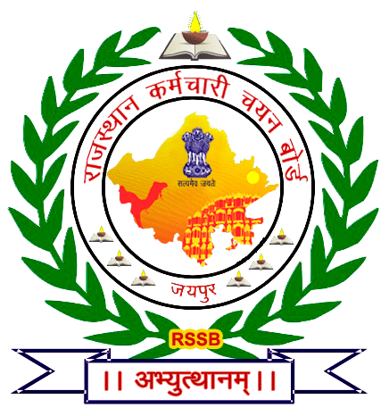
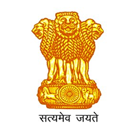

Rajasthan Staff Selection Board
राजस्थान कर्मचारी चयन बोर्ड

Rajasthan Staff Selection Board
राजस्थान कर्मचारी चयन बोर्ड
Certificates of Specially Abled Candidates by Medical Board (UDAIPUR) 20-07-2025 - LDC Grade II / Junior Assistant 2024 : Schedule for Verification of PH Certificates of Specially Abled Candidates by Medical Board (AJMER) Amended Advertisement regarding Extension of Withdrawal Date LDC Grade II / Junior Assistant 2024 :
Rajasthan Staff Selection Board
State Institute of Agriculture Management
Premises, Durgapura, Jaipur 302018
Helpline : 01412722520
Email : secyrsmssb[at]rajasthan[dot]gov[dot]in
Nodal Officer of Website : Sanjay Kumar Mathur
Dy. Director, IT(ACP)
Phone : 0141-2722520
Website Developed and maintained by Ramesh Kumawat (Programmer, RSSB)
COPYRIGHT © Rajasthan Staff Selection Board